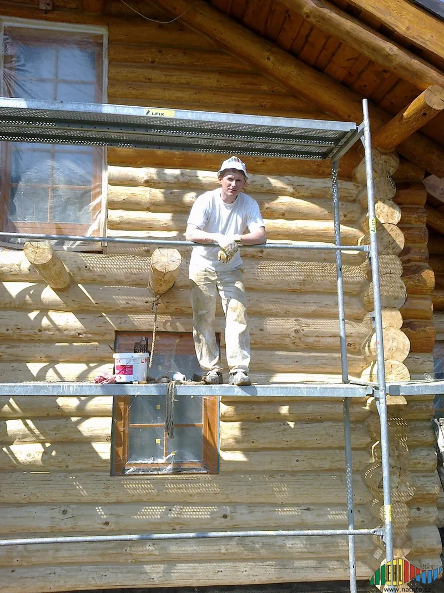
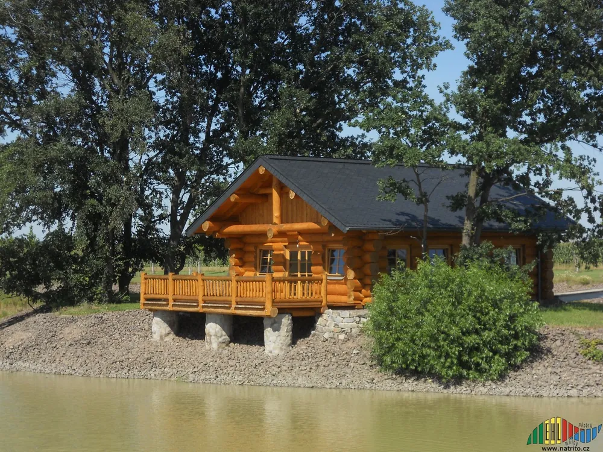

V minulosti mělo malířské a natěračské řemeslo velmi dobré jméno. Kořeny jeho cechovní činnosti sahají až do období vlády Karla IV., který ve stejném roce 1348, kdy založil Karlovu univerzitu a začal stavět hrad Karlštejn, udělil dekret malířskému společenstvu. Řemeslo si po další staletí vedlo velice dobře a v cechovní hierarchii zaujímalo významné třetí místo. A jak si vede dnes? Zeptali jsme se Pavla Ehla, který se oboru věnuje už pětadvacet let.
Jak se z obyčejného mladého člověka stane natěrač-profesionál?
K malířině a natěračině jsem se dostal náhodou. Pracoval jsem v podniku jako mistr stavební údržby a po revoluci jsem cítil, že firma nemusí změny přežít a že je lepší začít se včas starat sám o sebe než čekat, až čtyři sta zaměstnanců bude stát za branou a všichni budeme shánět práci. Natěračské řemeslo jsem měl vždycky v oblibě, proto jsme se ve dvou s kamarádem pustili v tomto oboru do podnikání. Začali jsme nátěry železných konstrukcí, i proto, že byly tehdy dost dobře ohodnocené. Budování nové firmy bylo hodně hektické, člověk nemohl koukat na čas, musel se věnovat růstu a osvojování si znalostí, prostě pilně pracovat a pak teprve sklízet. Bohužel společník měl jiné představy, chtěl především sklízet – vydělat velké peníze a o samotnou práci mu zas tolik nešlo. Asi po roce jsme se proto rozešli. Dlouho jsem pak podnikal sám, a jak moje jméno získávalo na kreditu u zákazníků, musel jsem přibrat další lidi, abych práci stíhal. Takže začínal jsem se štětkou a i teď, když je třeba, musím přiložit ruku k dílu a svým zaměstnancům pomoct.
Kdy jste se stal odborníkem na nátěry srubů a roubenek?
Řemeslo se dělí na různé pododbory a všemi jsem prošel. Začínal jsem na železných konstrukcích a sem tam nějaké ještě natřeme, malováním interiérů i fasád se také živíme. Hledal jsem zároveň své specifické místo na trhu a našel jsem si ho v nátěrech dřevostaveb. Viděl jsem v nich potenciál jak pracovní, tak odborný a začalo mě to bavit. První větší zakázky jsem dělal v roce 2000, ale úplně naplno jsem se dřevostavbám začal věnovat tak před pěti lety. Dnes tvoří kolem šedesáti procent našeho obratu, což v přepočtu na domy představuje v průměru asi dvanáct srubů za rok.
Nechci ze sebe dělat Ferdu Mravence, ale myslím si, že mám celkem slušný přehled v oboru, protože držíme dost široké portfolio prací, patří k nejširším v našem kraji. Zcela zodpovědně proto můžu říct, že nátěry dřevostaveb jsou po odborné stránce jednou z nejsložitějších věcí. Dřevo je živý materiál, je s ním spojeno mnoho problémů, které se mohou vyskytnout, typové odlišnosti používaných materiálů jsou daleko větší, než při malířských pracích nebo nátěrech konstrukcí.
Máte konkurenci ve svém oboru?
Konkurenci samozřejmě máme, ale používá většinou jiné techniky. Povrch dřeva čistí tryskajícím kukuřičným abrazivem, stejně tak k nanášení nátěrových hmot používají stříkací pistole. My všechno brousíme i natíráme ručně. Konkurují nám tedy asi v ceně, protože mají vyšší produktivitu práce, ale postupy a výsledek jsou naprosto odlišné. Záleží jen na zákazníkovi, co si vybere.
V čem je pro kvalitu výsledku lepší ruční práce?
Domnívám se, že vetřením štětkou do povrchu dřeva se barva lépe ukotví a přilne než při pouhém nástřiku. Na stavbě je vždy dost prachu a nečistot a i když vše vysajete, určité povrchové napětí na povrchu dřeva zůstává, a brání snadnému průniku barvy. Co se týká broušení versus tryskání, tak se domnívám, že jde hodně o estetické preference zákazníka, ale při broušení mechanickém je větší možnost lépe opracovat případné nedostatky na trámu, neboť tryskáním se opracuje jen tenká vrstva dřeva než při broušení.

Co je složitější na provedení – vnější, nebo vnitřní nátěr?
Samozřejmě vnější. V interiéru vám každý nátěr udělá základní službu, to znamená, že vytvoří hladký povrch pro snadnou údržbu, aby se prach dal ze stěny vysát a otřít a nezadíral se do pórů dřeva. Z tohoto pohledu mohou i svépomocné „hobby nátěry“ dopadnout perfektně. Na trhu je spousta vhodných výrobků. Ovšem nemůžete očekávat stejný výsledný dojem, jako když naše firma použije produkt Kreidezeit, jediný čistě přírodní materiál, který je směsí olejů a včelího vosku. Takto ošetřený povrch vypadá naprosto přirozeně a není jím potlačeno vnímání struktury a barvy samotného dřeva. Říkám to ze zkušenosti, protože jsem viděl vzorky i interiéry natřené jinými výrobky, žádný ve výsledku nepůsobí tak přirozeně. Tento materiál ale není na poprvé zvládnutelný amatérem, s ním musí pracovat profesionál. Vyžaduje několik pracovních postupů, těžko se roztírá, záleží i na síle nanášené vrstvy, takže i když si amatér přečte návod, stejně se mu nepodaří dosáhnout nejlepšího výsledku. S oblibou říkám, že první dům si zkazí a druhý se mu už zřejmě povede, protože bude mít zkušenosti.
Venkovní nátěry jsou složitější. Průměrně šikovný natěrač si sice s lazurami poradí a také estetický výsledek bude dobrý, ale problémem je zvolit vhodný typ nátěru pro konkrétní typ dřeva a konkrétní lokalitu – povětrnostní podmínky a nadmořskou výšku. To už je vysoce odborná záležitost, možností je tolik, že člověk bez znalostí si těžko sám vybere. V této souvislosti bych se rád vrátil k tématu konkurence. Každý místní natěrač, který je schopen něco slušně udělat, je naším konkurentem, protože bude levnější už jenom díky cestovním a ubytovacím nákladům, protože jezdíme po celé republice. Jenže my natřeme dvanáct srubů ročně a on jeden za dvanáct let, takže je na zákazníkovi, jestli mu ušetřená částka stojí za riziko špatně provedené práce, když si postaví dům za několik milionů. Mám smutné zkušenosti, že někteří ho podstoupili a špatně to dopadlo. Ale to už je jiný příběh.
Tak nám ho povězte...
Nebudu mluvit konkrétně, ale opravdu se nedávno stalo, že mi potenciální zákazník sdělil, že má fantastickou barvu z Německa a že nátěr mu někdo provede za poloviční cenu. Za dva a půl roku se barva na jeho velkém luxusním srubu začala viditelně loupat. Byl jsem vyzván, abych se podíval, jestli se s tím nedá něco udělat. Nátěr se musel kompletně odstranit a celý srub znovu natřít – investice za bratru čtvrt milionu. Chyba byla jak ve špatně zvoleném nátěrovém systému, tak v provedení práce. Šance na úspěšnou reklamaci je v takovém případě bohužel mizivá, protože oba dodavatelé, barvy i práce, svalují vinu na sebe navzájem.
Jak dlouho venkovní a vnitřní nátěry běžně vydrží, než se musí obnovit?
V interiéru desítky let, i u těch „hobby nátěrů“. Při použití přírodního Kreidezeitu doporučuji zákazníkům přeleštit stěny voskem po dvaceti letech, přeci jen někde může dojít k sublimaci nebo úbytku nátěru díky otírání při úklidu, nemusí se ale většinou kompletně měnit celý nátěr. Zděný dům za takovou dobu vymalujete minimálně čtyřikrát.
Údržba venkovních nátěrů závisí na tom, jak je dřevo povětrnostně namáháno. Obecně každému zákazníkovi říkám, že na jižní a jihozápadní straně vydrží odolnější nátěry čtyři roky a musí se přetřít ještě za stavu, kdy vypadají pěkně. Dům můžeme natřít i po delší době, ale výsledek bude mnohem horší, protože často dojde už k začernání dřeva a jinému poškození. Pokud je stavba natřená přírodním olejovým nátěrem, životnost bude zhruba poloviční, protože je méně mechanicky odolný. Stříkající voda, padající kroupy a sníh barvu vymyjí, obzvlášť na horních plochách srubových kulatin.
Získal jste hodně zkušeností, máte je komu předat? Jak vidíte budoucnost řemesla?
Těžko se shánějí šikovní mladí lidé, které řemeslo baví a budou se jím chtít živit. Já si mohu vzít někoho k sobě, všechno ho naučit a zapracovat ho, ale v našem kraji stejně uteče do automobilky, kde si vydělá víc. Nejsem schopen garantovat takové výdělky a je to problém všech zaměstnavatelů. Naše práce je navíc řehole, hotová je, když je domalovaná místnost, pak teprve můžeme jít domů, ne jako ve fabrice, kde mají padla. Rád bych se dožil toho, aby pro tohle náročné řemeslo, které se musí dělat s láskou a nejen pro peníze, dorůstali mladí lidé. Aby se mu chtěli věnovat, získávat zkušenosti a postrkovat naši káru dál. Jenže u nás i díky podpoře státu každý studuje aspoň na bakaláře, nic nemám proti vzdělání, ale kdo bude dělat řemeslo? Stejně tak se nikdo nezabývá úrovní absolventů učebních oborů, mnoho z nich jsou radši nezaměstnaní a u natěračské štětky nezůstanou. Budoucnost řemesla bohužel moc růžově nevidím, přitom poptávka po kvalitních řemeslnících je a bude, protože zákazníci mají oprávněně vysoké nároky.
Děkuji za rozhovor.
